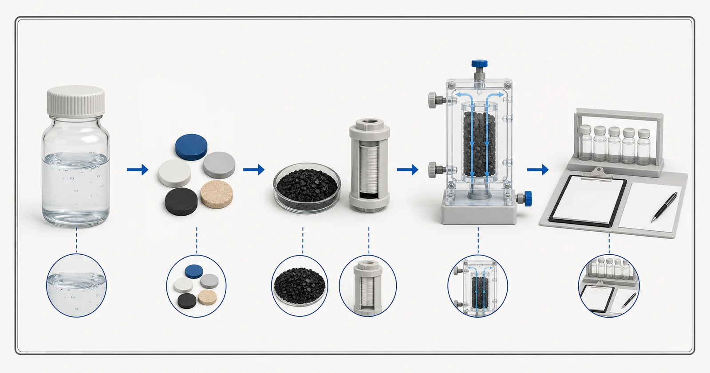

Přímá odpověď
Aktivní uhlí může být součástí léčebné strategie PFAS, ale fráze PFAS zahrnuje mnoho sloučenin a žádné obecné tvrzení o uhlíku není dostatečné. Důkaz musí identifikovat testované sloučeniny PFAS, vstupní koncentrace, vodní matrici, uhlík a hotovou konstrukci, podmínky toku nebo kontaktu, plán odběru vzorků a koncový bod. Sloučeniny s delším a kratším řetězcem se mohou chovat odlišně, zatímco přírodní organická hmota a další složky mohou soutěžit o adsorpční místa. U výrobků pro domácnost by si kupující měli ověřit přesný certifikovaný výrobek a tvrzení o snížení a dodržovat jeho pokyny k údržbě. U průmyslových systémů jsou analýzy vody, pilotní nebo aplikační důkazy, průlomové monitorování a plán výměny ústředním bodem přezkumu.

- Pojmenované PFAS a přítokové koncentrace
- Vodní matrice a konkurenční látky
- Identifikovaná média nebo konstrukce
- Testovací podmínky a koncové body
- Důkazy z terénního monitoringu
konceptuální ilustrace. Ne výsledky testů, certifikace produktu nebo technický výkres.
Začněte s problémem kupujícího
Kupující může obdržet prohlášení, že uhlík je vhodný pro PFAS, aniž by viděl, které sloučeniny byly zahrnuty. To na srovnání produktů nestačí. PFOA, PFOS a látky s kratším řetězcem by se neměly shrnout do jedné předpokládané reakce. Důležitá je také zdrojová voda: problém čisté laboratoře automaticky nepředpovídá výkonnost v podzemní vodě, komunální vodě nebo průmyslovém toku obsahujícím organické látky a další konkurenty.
Důkazní cesta se mezi certifikovaným point-of-use zařízením a zakázkovou průmyslovou postelí liší. Certifikace je vázána na uvedený výrobek, normu, zkušební podmínky a tvrzení. Neměl by být přenášen do jiné kazety nebo na hromadné médium. Průmyslový projekt může místo toho využívat testování médií, modelování, pilotní práci a monitorovaný systém zpoždění. Stránka a nabídka musí identifikovat, která cesta podporuje doporučení a které otázky zůstávají otevřené.
Jaká zpráva a provozní údaje jsou požadovány
Revize PFAS vyžaduje analytická data specifická pro sloučeninu a pečlivý kontext vzorku. Použijte vhodnou laboratorní metodu a identifikujte nedetekovatelné limity hlášení, spíše než posílejte pouze souhrn nebo marketingový štítek.
- PFAS seznam analytů, výsledek pro každou sloučeninu, limit hlášení a datum odběru vzorků
- zdroj vody, umístění vzorku a případnou úpravu před odběrem vzorků
- TOC nebo rozpuštěný organický uhlík a příslušné konkurenční složky
- pH, teplota, zákal a nerozpuštěné látky
- průměrný a špičkový průtok, denní doba provozu a očekávané kolísání poptávky
- navrhovaná uhlíková média, konstrukce kazety nebo nádoby a evidence šarže
- cílová úroveň výstupu, metoda monitorování a analytický obrat
- náhradní spoušť, pokyny k údržbě a plán manipulace s použitými médii
Zpráva by měla být dostatečně aktuální, aby představovala navrhovaný zdroj, a měla by uvádět datum a místo vzorku. Pokud se voda mění podle sezóny, výrobní šarže nebo provozního stavu, uveďte rozsah spíše než jeden vhodný výsledek. Uveďte požadovaný cíl vyčištěné vody odděleně od aktuální analýzy. Pokud je hodnota neznámá, označte ji jako neznámou; viditelná mezera je bezpečnější než uhodnuté číslo.
Hydraulické informace patří vedle chemie. Samotný průměrný průtok může skrýt podmínky krátké špičky, přerušovaný provoz a dlouhou stagnaci. Potvrďte denní dobu provozu, špičkovou spotřebu, dostupný tlak, povolenou tlakovou ztrátu, rozměry zařízení a WHO bude monitorovat a vyměňovat uhlík. Tyto detaily rozhodují o tom, zda lze v provozuschopném systému použít jinak věrohodná média.
Logika výběru
Nejprve definujte nárok. Může to být redukce pojmenovaného PFAS v uvedeném produktu pro domácnost nebo kontrola pojmenovaného PFAS na cíl projektu ve větším systému. Spíše než citování obecného prohlášení o aktivním uhlí potvrďte příslušné důkazy pro toto tvrzení. Informace EPA poznamenávají, že úprava závisí na typu uhlíku, hloubce lože, průtoku, specifickém PFAS, teplotě, organické hmotě a dalších složkách; tyto proměnné patří do revize projektu.
Za druhé si přečtěte podmínky testu. Porovnejte testovací vodu s navrhovaným zdrojem a potvrďte, zda důkazy uvádějí pouze rané vzorky nebo sledují systém směrem k průlomu. Vysoké počáteční snížení nestanoví úplný servisní interval. Kontrola by měla zaznamenat ošetřený objem, kontaktní podmínky, výsledky specifické pro sloučeninu a koncový bod použitý k zastavení testu nebo výměně média.
Za třetí potvrďte údržbu a ověření. U filtru, který není vyměněn podle potřeby, již nelze předpokládat, že bude fungovat tak, jak bylo testováno. Průmyslové systémy potřebují přístupné odběry vzorků, analytický plán a akční plán, který zohledňuje laboratorní obrat. Je-li citován certifikát, ověřte aktuální výpis pro přesný produkt a tvrzení; nespoléhejte pouze na logo, generické standardní číslo nebo prohlášení dodavatele.
Předúprava, zařízení a provozní kontext
Kontrola částic před GAC může být důležitá, protože s adsorpční vrstvou by se nemělo zacházet jako s nekontrolovaným filtrem pevných látek. Nádoby se zpožděním olova mohou poskytovat provozní monitorování a druhou bariéru, zatímco produkty v místě použití musí být instalovány a udržovány podle jejich ověřených pokynů. Konkurující si organická hmota a měnící se podmínky zdroje mohou ovlivnit plánování náhrady v obou případech.
Správa PFAS zahrnuje také zbytky. Zachycené sloučeniny zůstávají spojeny s použitým médiem, kazetami nebo regenerantem, takže projekt potřebuje vhodnou cestu manipulace. Yuchen Water může diskutovat o uhlíkových materiálech, kazetách, nádobách a související podpoře vybavení, ale specifická rozhodnutí o odpadu, regulačních a konečných procesech vyžadují odpovědné strany projektu a aktuální požadavky.
Časté chyby
- Použití PFAS jako by to byla jedna sloučenina s jednou adsorpční odezvou
- Přenos certifikace z jednoho uvedeného produktu na jinou kazetu nebo hromadné médium
- Vykazování počátečního snížení jako životnosti systému
- Ignorování organické konkurence, sloučenin s kratším řetězcem a analytických limitů
- Neposkytování plánu údržby nebo průlomového monitorování
Evidenční a servisní hranice
Yuchen Water nezveřejňuje paušální PFAS procento snížení, kapacitu nebo životnost pro všechny produkty s aktivním uhlím. Jakýkoli dodaný protokol se vztahuje pouze na identifikovaný vzorek, konstrukci a podmínky. Kupující požadující řešení PFAS by měl předložit data specifická pro sloučeninu a zamýšlené systémové povinnosti, aby bylo možné porovnat dostupné důkazy bez nadměrného rozšiřování.
Technický výstup může doporučit další laboratorní práci, pilotní testování, jinou kategorii ošetření nebo kombinovaný proces. To je platný výsledek, když jsou důkazy neúplné. Cílem není vnutit aktivní uhlí do každého projektu PFAS; je to definovat podpůrný materiál a směr zařízení s monitorováním a servisními kontrolami.
Yuchen Water nejprve zkontroluje cíl a důkazy, poté identifikuje vhodný formát uhlíku a otázky týkající se materiálu, podporuje předúpravu a potřeby vybavení a dokumenty nebo testy, které jsou stále potřebné. Výstupem může být předběžný směr, požadavek na chybějící informace nebo podložené doporučení materiálu a vybavení. Doporučení není zveřejněno jednoduše proto, že kupující dodal název produktu.
Po dodání může technická podpora pokrývat potvrzení dokumentů, otázky týkající se instalace a proplachování, pokyny pro dálkové uvedení do provozu, monitorovací body a plánování výměny v rámci dohodnutého rozsahu. Skutečný výkon stále závisí na schváleném materiálu, kompletním vybavení, zdrojové vodě, instalaci, provozu a údržbě. Publikované pokyny nemohou nahradit přezkoumání projektu.
Před kontrolou zprávy, konstrukce, důkazů a provozních podmínek není slíben žádný konečný materiál, kapacita, životnost, procento odstranění nebo výsledek projektu.
Oficiální technické zdroje
Tyto zdroje vysvětlují principy léčby nebo hranice certifikace. Necertifikují produkty Yuchen Water a nenahrazují důkazy specifické pro projekt.
Související vedení s aktivním uhlím
Pokračujte v clusteru znalostí, zkontrolujte vybrané ukázkové důkazy pouze v rámci jejich stanovených limitů, porovnejte formáty produktů nebo odešlete zprávu k technické kontrole.